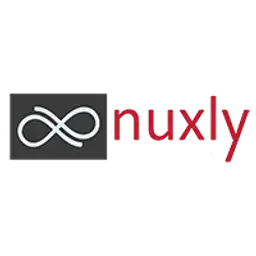

Solution for outsourcing backup Odoo.sh
auto_database_backup_odoo_shThis module was created as a lightweight extension of the excellent auto_database_backup module by CybroAddons.
On Odoo.sh, the original module cannot be used as-is because:
Our module simply reuses the daily backup already generated in /backup.daily by Odoo.sh.
It zips it, and automatically uploads it to your chosen Google Drive or OneDrive.
For instances with a very large or fast-growing filestore, the "Include Filestore" option can be disabled so only the database dump is backed up — no need to allocate extra Odoo.sh disk space just to generate and delete a much bigger archive every day.
To configure the required Google or Microsoft applications (Client ID / Secret / Redirect URI), you can refer to the official guide provided by CybroAddons: View Setup Guide .

This module is maintained by Nuxly. Visit nuxly.com